Overhaul
Housing Components DisassemblyNote: The front and rear oil seals do not need to be removed unless you are replacing them.
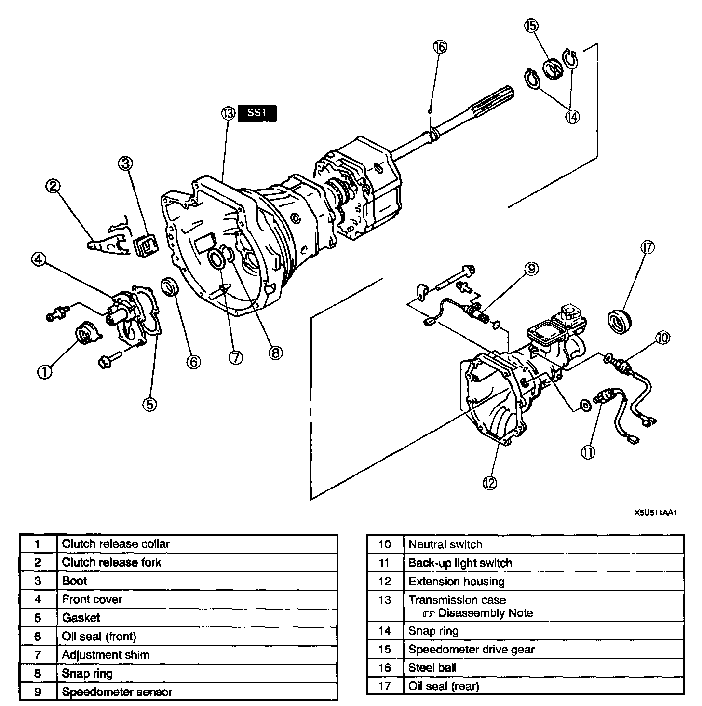
- Disassemble in the order indicated in the table.
Transmission Case Disassembly Note
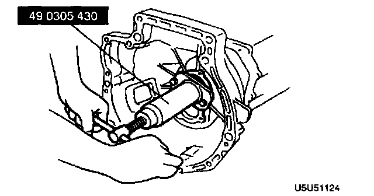
- Remove the transmission case from the intermediate housing and gear component by using the SST.
Housing Components Assembly
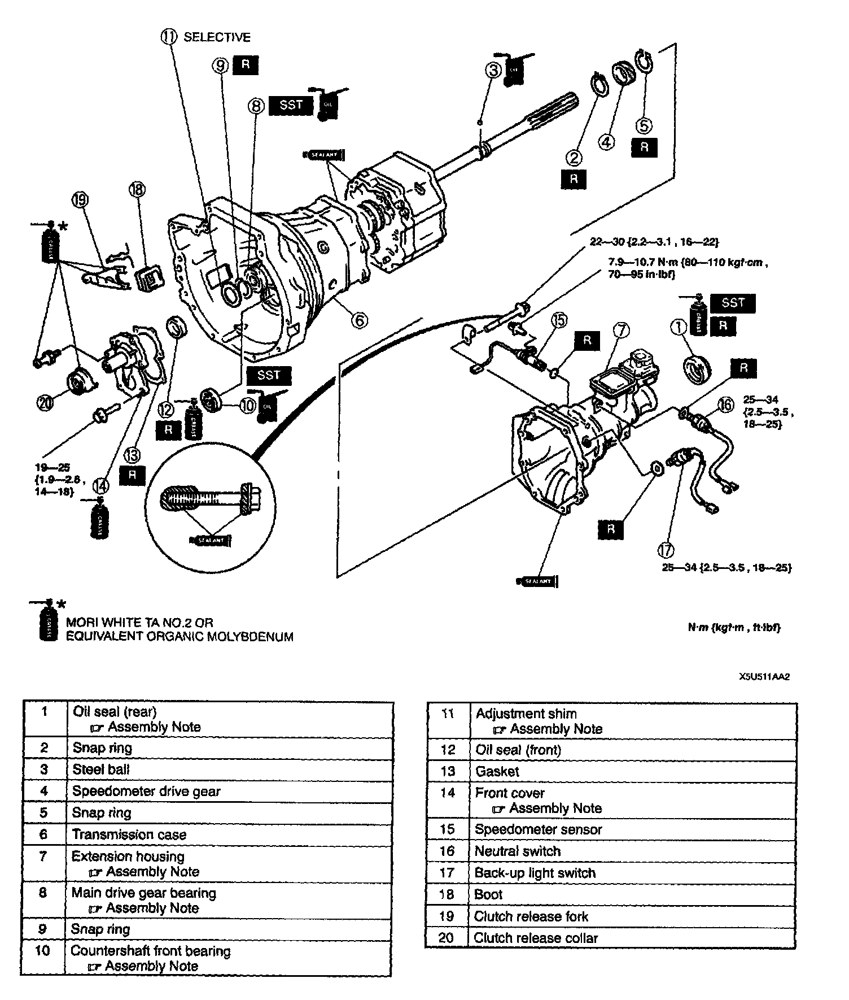
1. Assemble in the order indicated in the table.
2. Inspect the gearshift lever operation.
Oil Seal (Rear) Assembly Note
1. Apply transmission oil to the outer periphery.
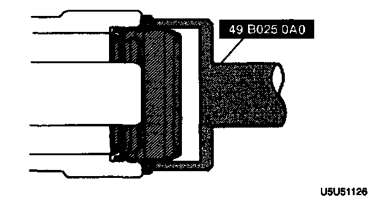
2. Install a new oil seal with the SST
Extension Housing Assembly Note
1. Apply sealant to the contact surfaces of the bearing housing and extension housing.
2. Install the extension housing.
3. Apply sealant to the bolt threads, and install the bolts.
Tightening torque 22 - 30 Nm (2.2 - 3.1 kgf-m, 16 - 22 ft. lbs.)
Main Drive Gear Bearing Assembly Note
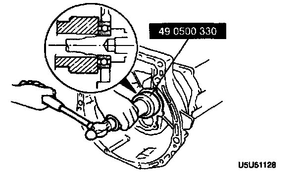
- Install the main drive gear bearing by using the SST, and secure it with a new snap ring.
Countershaft Front Bearing Assembly Note
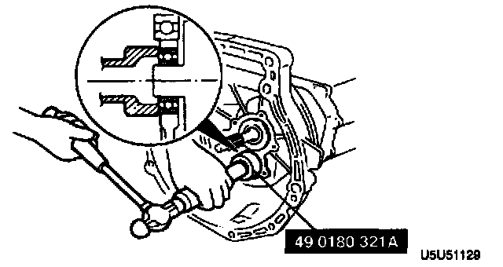
- Install the countershaft front bearing by using the SST.
Adjustment Shim Assembly Note
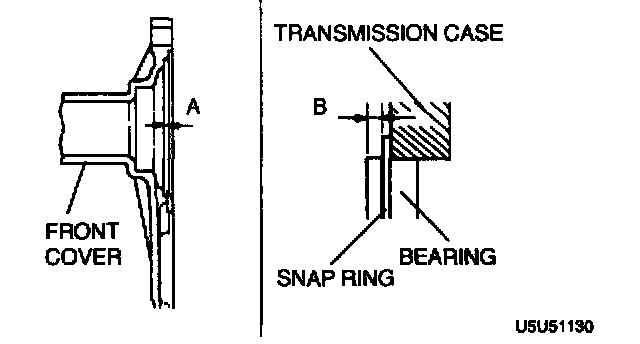
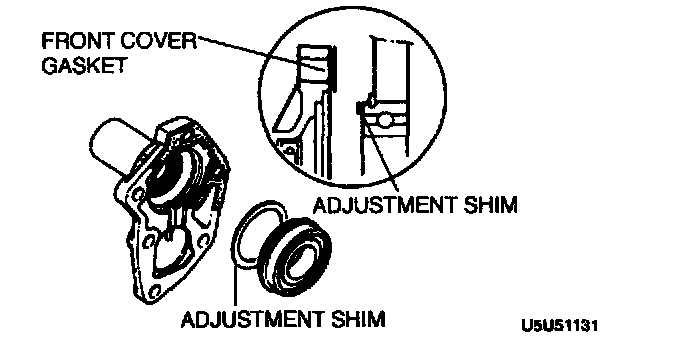
- After measuring dimensions A and B show in the figure, use the adjustment shim(s) of the thickness corresponding to the value of A minus B, so that bearing end play will be within the specification.
Bearing end play 0 - 0.1 mm (0 - 0.004 inch)
Adjustment shim thickness 0.10 mm (0.004 inch), 0.30 mm (0.012 inch)
Front Cover Assembly Note
1. Install the oil seal (front) onto the front cover.
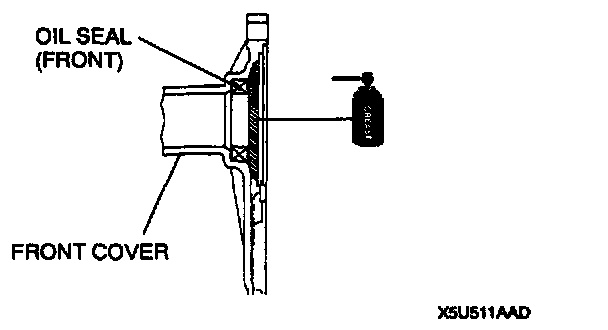
2. Apply grease to shaded area of the front cover.
3. Install the front cover.
Shift Fork And Shift Rod Parts Disassembly / Assembly
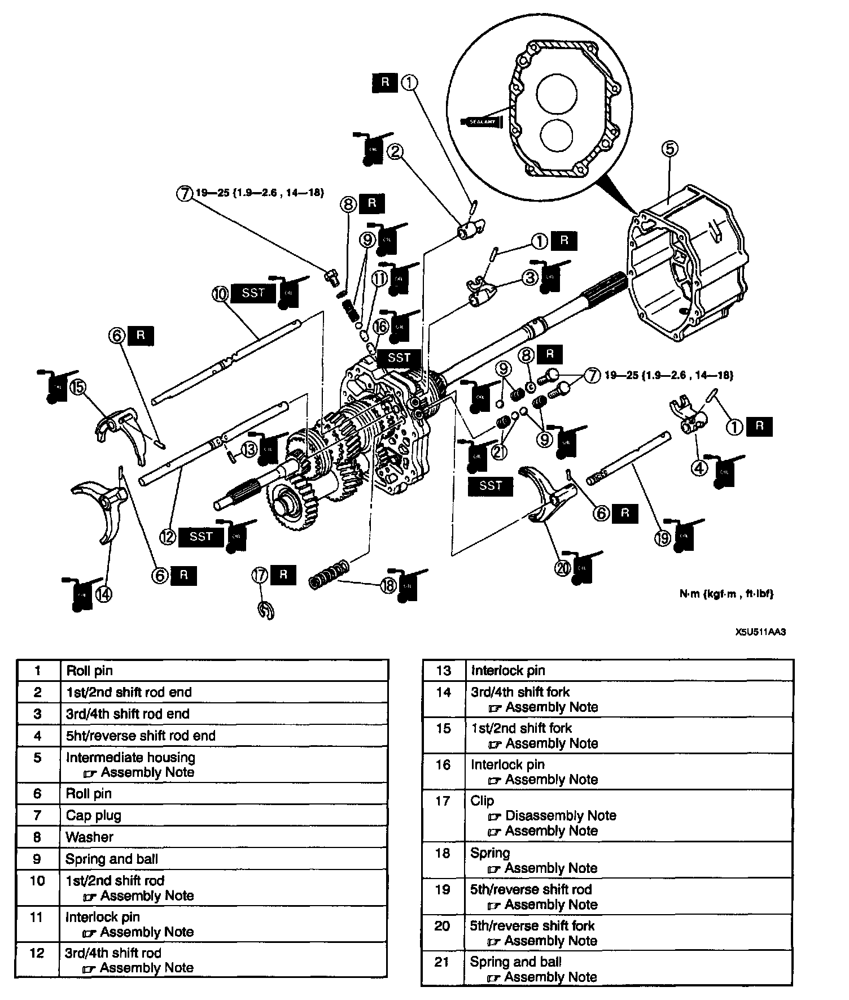
1. Disassemble in the order indicated in the table.
2. Assemble in the reverse order of disassembly.
Clip Disassembly Note
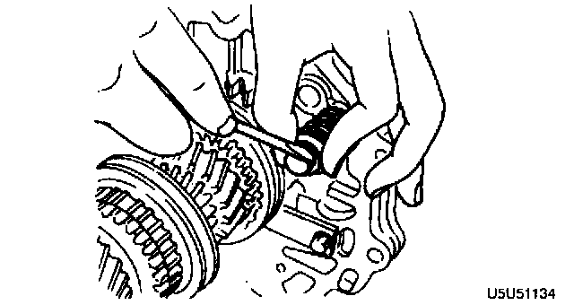
- Remove the clip and spring from the 5th/reverse shift rod.
Spring And Ball Assembly Note
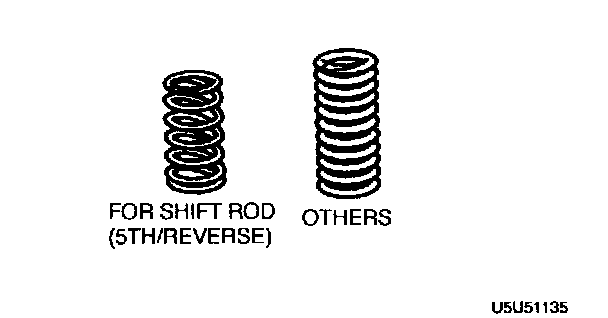
1. Insert the spring and ball (5th/reverse) into the bearing housing.
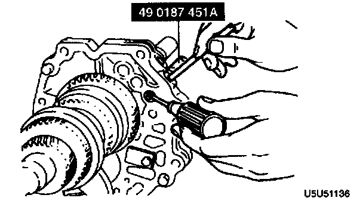
2. Press down the spring and ball (5th/reverse) by using the SST and a screwdriver, and install the shift rod.
5th/Reverse Shift Fork And Rod Assembly Note
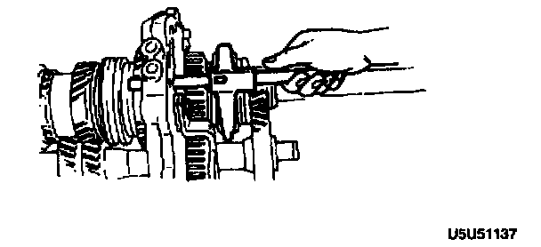
- Install the 5th/reverse shift fork and 5th/reverse shift rod into the bearing housing.
Spring, Clip Assembly Note
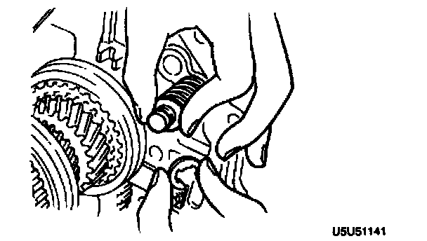
1. Slide the spring onto the 5th/reverse shift rod. While pressing the spring, install a new clip.
Interlock Pin Assembly Note
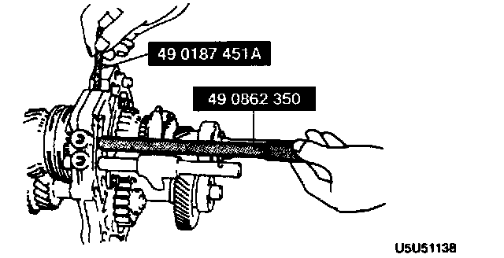
1. Position the interlock pin into the bearing housing by using the SSTs.
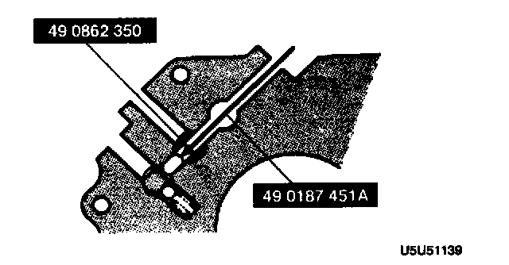
2. Verify that the interlock pin is correctly installed.
1st/2nd Shift Fork And Rod, 3rd/4th Shift Fork And Rod, And Interlock Pin Assembly Note
1. Set the 1st/2nd shift fork onto the 1st/2nd clutch hub component.
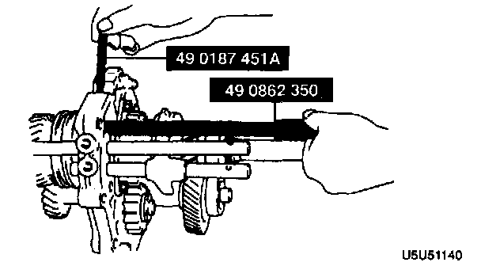
2. Install the 3rd/4th shift fork and 3rd/4th shift rod, and install the interlock pin into the bearing housing as described in the interlock pin assembly note. (Refer to Interlock Pin Assembly Note.)
3. Install the spring, ball and new washer, then tighten the cap plug.
Tightening torque 19 - 25 Nm (1.9 - 2.6 kgf-m , 14 - 18 ft. lbs.)
4. Install the Roll pin.
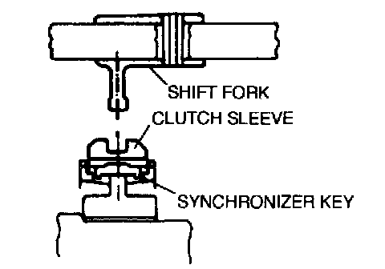
5. Verify that the centers of the shift fork and clutch hub sleeve are aligned properly. If they are not, select the proper washer to install between 1st gear and the mainshaft front bearing, and between reverse gear and the mainshaft front bearing.
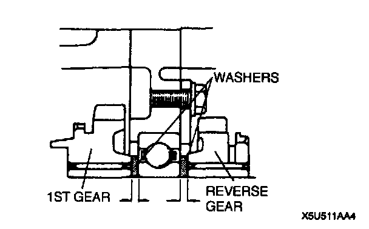
6. The following washer thicknesses are available. The total thickness of the front and rear washers should be as follows.
Total thickness
5.9 - 6.0 mm (0.232 - 0.236 inch)
Washer thickness
2.2 mm (0.087 inch), 2.7 mm (O.106 inch),
3.0 mm (0.118 inch), 3.2 mm (O.126 inch),
3.7 mm (0.146 inch)
Intermediate Housing Assembly Note
1. Apply sealant to the contact surfaces of the intermediate housing and bearing housing.
2. Mount the intermediate housing to the bearing housing by tapping it lightly with a plastic hammer.
Shift Fork And Shift Rod Parts Inspection
Springs Inspection
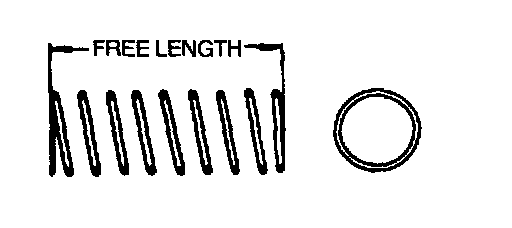
1. Measure the free length of the springs.
Standard free length
Shift rod (5th/reverse) spring: 76.5 mm (3.012 inch)
Detent ball spring (1st/2nd, 3rd/4th): 22.5 mm (0.886 inch)
Detent ball spring (5th/reverse): 17.0 mm (0.669 inch)
2. If not as specified, replace the springs.
Intermediate Housing Inspection
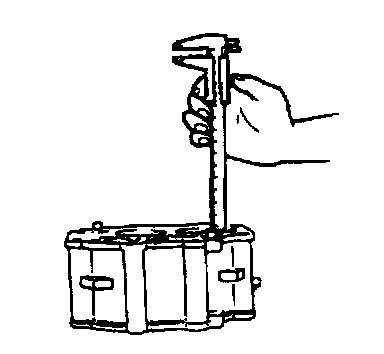
1. Measure the intermediate housing pin height.
Standard height 9.0 - 10.0 mm (0.354 - 0.394 inch)
2. If not as specified, replace the intermediate housing.
1st/2nd, 3rd/4th And 5th/reverse Shift Fork Inspection
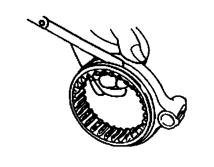
1. Measure the clearance between the hub sleeve and shift fork.
Standard clearance: 0.2 - 0.3 mm (0.008 - 0.012 inch)
Maximum: 0.5 mm (0.020 inch)
2. If not as specified, replace the hub sleeve and shift fork.
Mainshaft And Countershaft Parts Disassembly
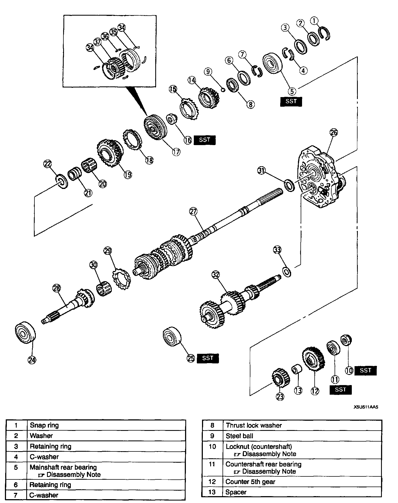
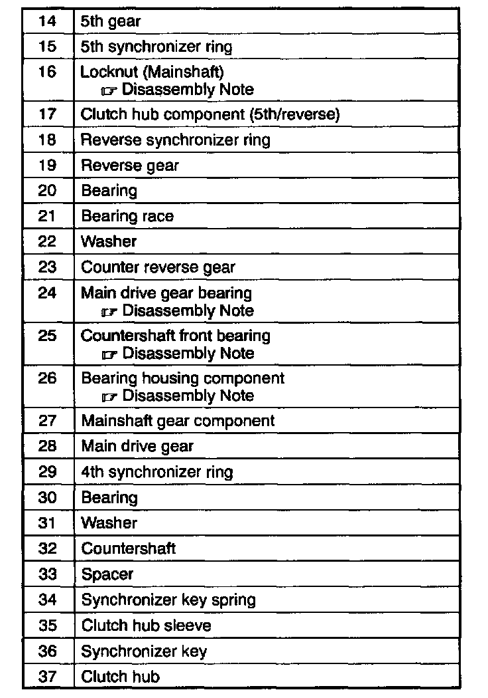
- Disassemble in the order indicated in the table.
Mainshaft Rear Bearing Disassembly Note
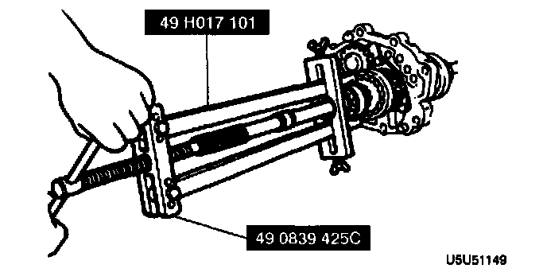
- Remove the mainshaft rear bearing by using the SSTs.
Locknut (Countershaft) Disassembly Note
1. Shift the clutch hub sleeves into 1st and reverse gears to lock the rotation of the mainshaft.
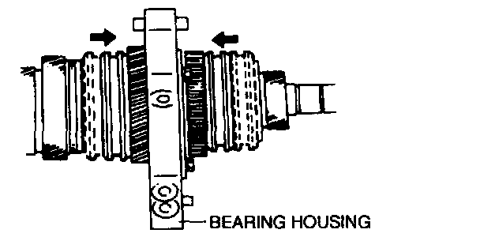
2. Use a suitable tool to uncrimp the tabs of the locknut.
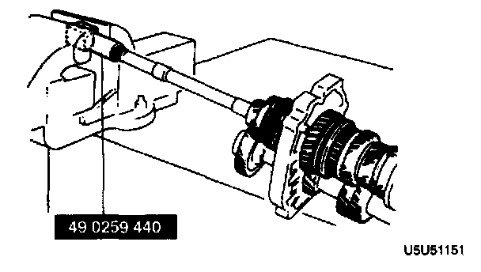
3. Connect the SST to the mainshaft and secure it in a vise.
4. Remove the locknut.
Countershaft Rear Bearing Disassembly Note
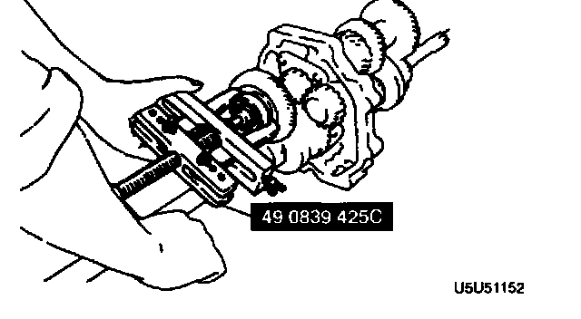
- Remove the countershaft rear bearing by using the SST.
Locknut (Mainshaft) Disassembly Note
1. Shift the clutch hub sleeves into 1st and reverse gears to lock the rotation of the mainshaft.
2. Use a suitable tool to uncrimp the tabs of the locknut.
3. Secure the bearing housing in a vise.

4. Remove the locknut by using the SST.
Main Drive Gear Bearing Disassembly Note
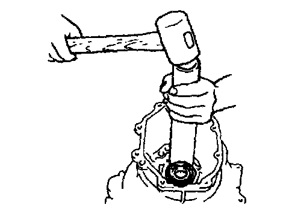
- Remove the main drive gear bearing with a pipe and a hammer.
Outer diameter of pipe 70.0 mm (2.76 inch)
Countershaft Front Bearing Disassembly Note
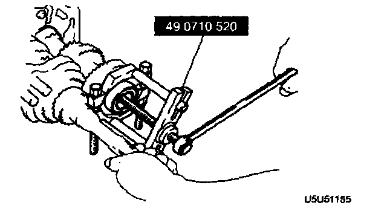
- Remove the countershaft front bearing by using the SST
Bearing Housing Component Disassembly Note
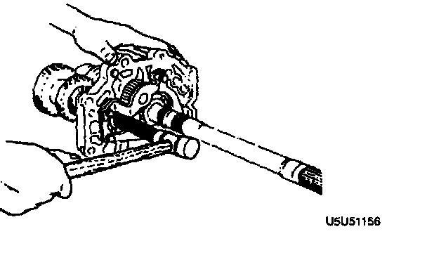
- Remove the bearing housing by lightly tapping the countershaft with a copper hammer.
Mainshaft And Countershaft Parts Assembly
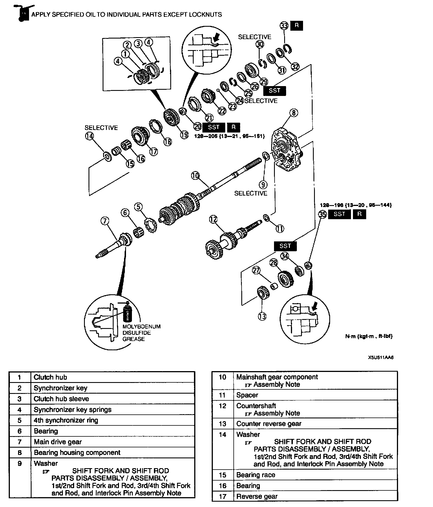
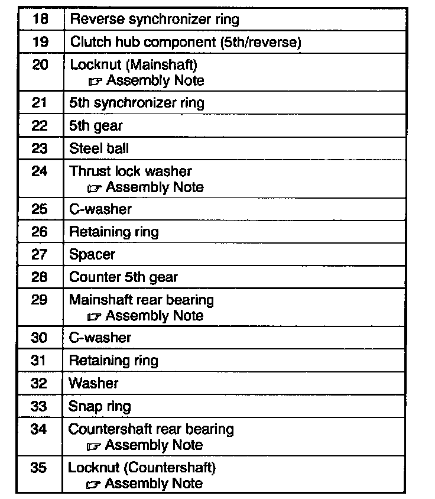
- Assemble in the order indicated in the table.
Mainshaft Gear Component And Countershaft Assembly Note
1. Place the mainshaft gear component and the countershaft on the bearing housing.
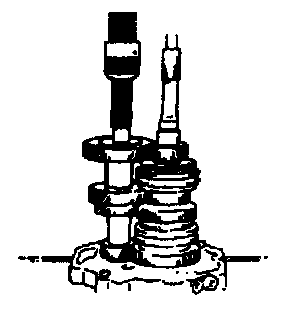
2. Use a bar to press in the countershaft.
Locknut (Mainshaft) Assembly Note
1. Secure the bearing housing component in a vise.
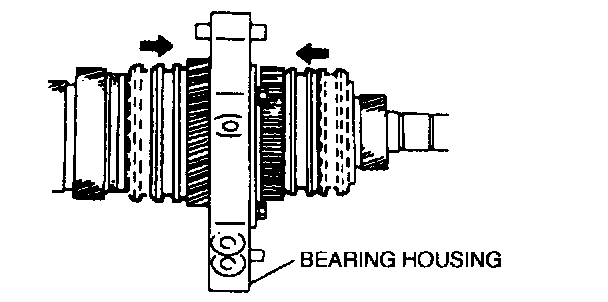
2. Shift the clutch hub sleeves into 1st and reverse gears to lock the rotation of the mainshaft.
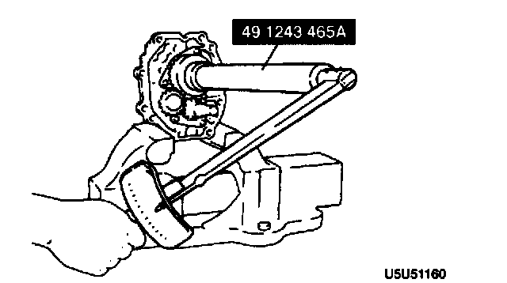
3. Install a new locknut and tighten it by using the SST
Tightening torque 128 - 205 Nm (13 - 21 kgf-m , 95 - 151 ft. lbs.)
4. Use a chisel to stake the locknut.
Thrust Lock Washer Assembly Note
1. Install the synchronizer ring and 5th gear.
2. Insert the steel ball and thrust lock washer.
3. Install two 3.0 mm (0.118 inch) thick C-washers in the front mainshaft groove.
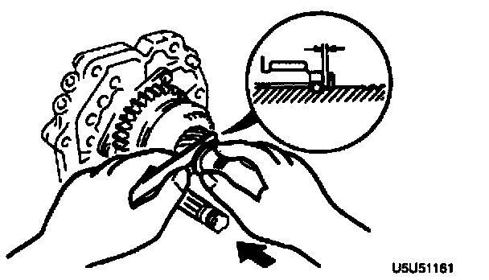
4. Push the C-washers fully toward 5th gear and measure the clearance between the thrust lock washer and C-washers. If the clearance in not as specified, select the proper thrust lock washer.
Standard clearance 0.1 - 0.3 mm (O.004 - 0.012 inch)
Thrust lock washer thickness
6.2 mm (0.244 inch); 6.4 mm (O.252 inch),
6.5 mm (O.256 inch); 6.6 mm (0.260 inch)
5. Install the retaining ring.
Mainshaft Rear Bearing Assembly Note
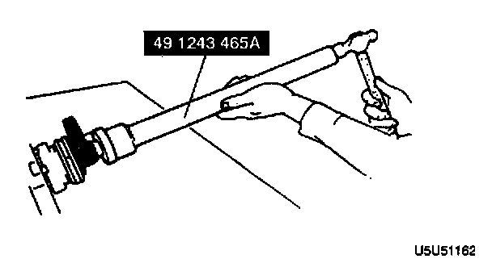
1. Install the mainshaft rear bearing by using the SST, and fully seat it against the front C-washers.
2. Install the original C-washers and hold them with the retaining ring.
3. Install the washer and new snap ring.
4. If the C-washers do not fit into the rear mainshaft groove, select the proper thickness C-washers.
5. Verify that C-washers installed at one position are of the same thickness.
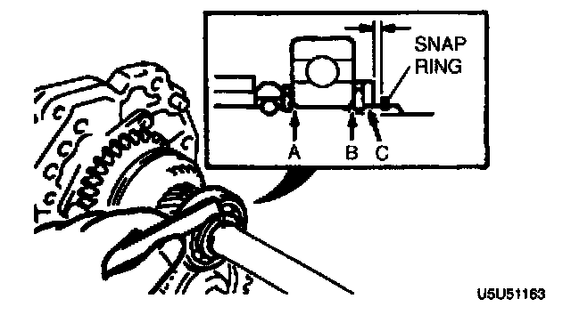
6. With points A through C pressed tightly together, measure the clearance between the washer and snap ring. If the clearance is not as specified, select the proper C-washers.
Standard clearance
0 - 0.1 mm (O - 0.004 inch)
C-washer thickness
2.9 mm (O.114 inch), 3.0 mm (O.118 inch),
3.1 mm (0.122 inch), 3.2 mm (O.126 inch)
Countershaft Rear Bearing Assembly Note
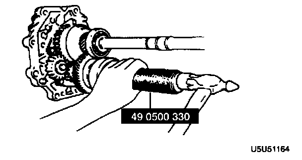
- Install the countershaft rear bearing onto the countershaft by using the SST
Locknut (Countershaft) Assembly Note
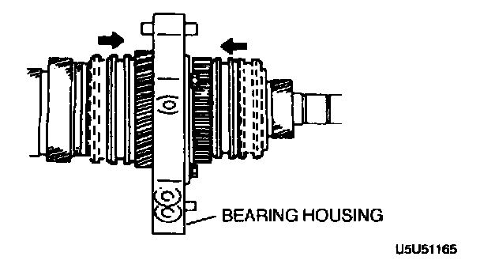
1. Shift the clutch hub sleeves into 1st and reverse gears to lock the rotation of the mainshaft.
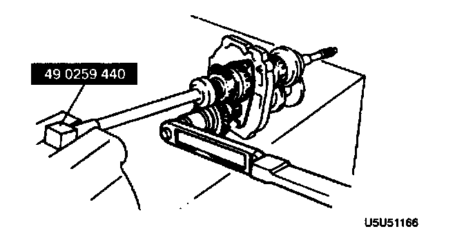
2. Connect the SST to the mainshaft and secure it in a vise.
3. Install a new locknut and tighten it.
Tightening torque: 128 - 196 Nm (13 - 20 kgf-m , 95 - 144 ft. lbs.)
4. Use a chisel to stake the locknut.
Mainshaft And Countershaft Parts Inspection
Bearing Inspection
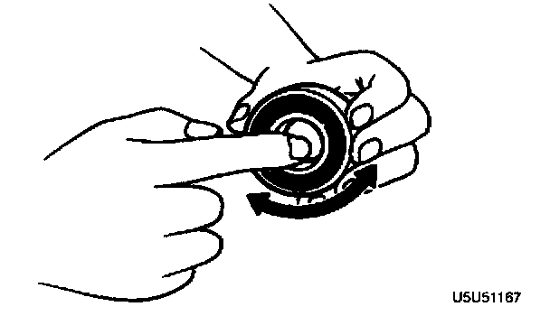
- Inspect for damage and rough rotation.
Each Gear And Main Drive Gear Inspection
- Inspect the following, and replace the each gear and main drive gear as necessary.
1. Synchronizer cones for wear.
2. Individual gear teeth for damage, wear, and cracks.
3. Synchronizer ring matching teeth for damage and wear.
4. Main drive gear splines for damage and wear.
Clutch Hub Component Inspection
- Inspect the following, and replace the clutch hub component as necessary.
1. Clutch hub sleeve and hub operation.
2. Individual gear teeth for damage, wear, and cracks.
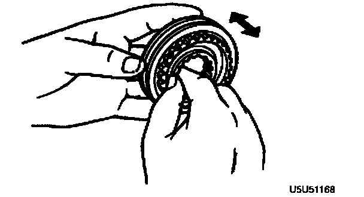
3. Synchronizer keys for damage, wear, and cracks.
Synchronizer Ring Inspection
1. Inspect the following, and replace the synchronizer ring as necessary.
1) Individual synchronizer ring teeth for wear and cracks.
2) The tapered surface for wear and cracks.
2. Set the synchronizer ring squarely in the gear.
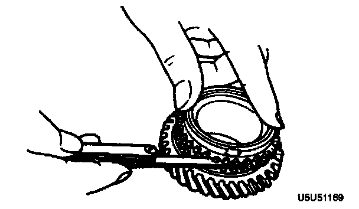
3. Measure the clearance between the synchronizer ring and flank surface of gear all around the circumference.
Standard clearance 1.5 mm (0.059 inch)
Minimum 0.8 mm (0.031 inch)
4. If not as specified, replace the synchronizer ring.
Countershaft Inspection
- Inspect the following, and replace the countershaft as necessary.
1. Gear teeth for damage, wear, and cracks.
2. Splines for damage and wear.
Mainshaft Parts Disassembly/ Assembly
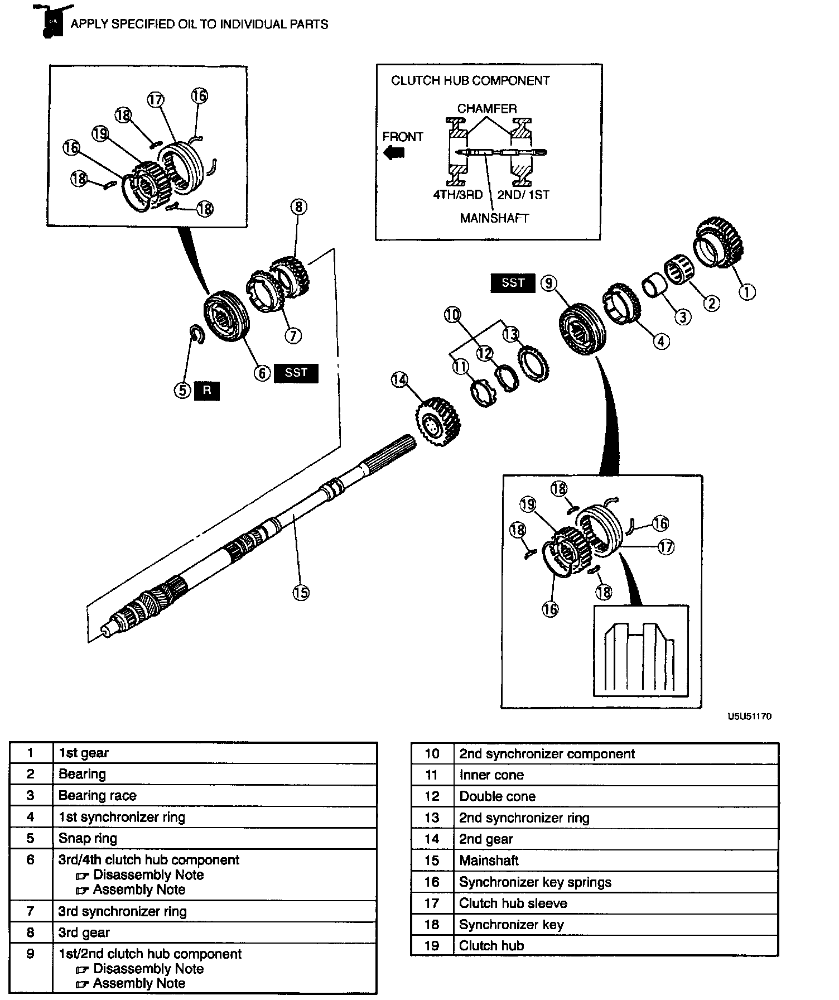
1. Disassemble in the order indicated in the table.
2. Assemble in the reverse order of disassembly.
3rd/4th Clutch Hub Component Disassembly Note
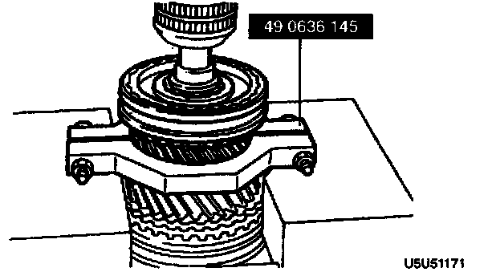
1. Position the SST between 2nd and 3rd gears, and hold the mainshaft from underneath.
2. Press the mainshaft out of the 3rd/4th clutch hub component and 3rd gear.
1st/2nd Clutch Hub Component Disassembly Note
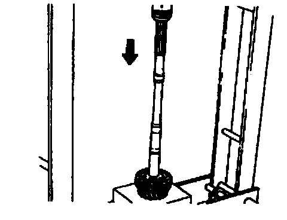
- Hold the mainshaft, and press the 1st/2nd clutch hub component, 2nd synchronizer component, and 2nd gear from the mainshaft.
1st/2nd and 3rd/4th Clutch Hub Component Assembly Note
1. Set the 2nd gear, 2nd synchronizer component, and 1st/2nd clutch hub component on the mainshaft, then press in the mainshaft.
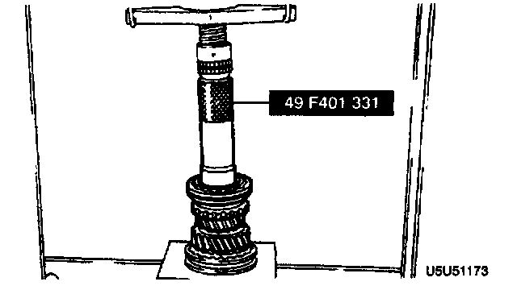
2. Set the 3rd gear, 3rd synchronizer ring, and 3rd/4th clutch hub component on the mainshaft, then press them onto the mainshaft by using the SST.
3. Install a new snap ring on the front of the mainshaft.
4. Install the bearing race, bearing, and 1st gear.
Mainshaft Parts Inspection
Each Gear Inspection
- Inspect the following, and replace each gear as necessary.
1. Synchronizer cones for wear.
2. Individual gear teeth for damage, wear, and cracks.
3. Synchronizer ring matching teeth for damage and wear.
4. Main drive gear splines for damage and wear.
Synchronizer Ring Inspection
1. Inspect the following, and replace the synchronizer ring as necessary.
1) Individual synchronizer ring teeth for wear and cracks.
2) The tapered surface for wear and cracks.
2. Set the synchronizer ring squarely in the gear.
3. Measure the clearance between the synchronizer ring and flank surface of gear all around the circumference,
Standard clearance 1.5 mm (0.059 inch)
Minimum 0.8 mm (0.031 inch)
4. If not as specified, replace the synchronizer ring.
Clutch Hub Component Inspection
- Inspect the following, and replace the clutch hub component as necessary.
1. Clutch hub operation.
2. Individual gear teeth for damage, wear, and cracks.
Synchronizer Component (2nd) Inspection
1. Inspect individual synchronizer ring gear teeth for damage, wear, and cracks. Replace the synchronizer component if any such damage is found.
2. Inspect for wear and damage to the tapered surfaces of the inner cone, double cone, and synchronizer ring. Replace the synchronizer component if any such damage is found.
3. Set the synchronizer ring squarely in the gear.
4. Measure the clearance between the synchronizer ring and the flank surface of gear all around the circumference.
Clearance 1.5 mm (O.059 inch)
Minimum 0.8 mm (O.031 inch)
Mainshaft Inspection
1. Measure the mainshaft runout as shown.
Maximum runout 0.03 mm (0.0012 inch)
2. If not as specified, replace the mainshaft.
3. Inspect splines for damage or wear. Replace the main shaft if any such damage is found.
4. Measure the clearance between mainshaft and gear (or bushing).
Maximum clearance 0.15 mm (0.006 inch)
5. If not as specified, replace the mainshaft.
Bearing Housing Component Disassembly / Assembly
1. Disassemble in the order indicated in the table.
2. Assemble in the reverse order of disassembly.
Reverse Idler Gear Shaft Disassembly Note
1. Remove the reverse idler gear shaft installation bolt.
2. Support the reverse idler gear shaft, and press it out from the bearing housing.
Mainshaft Front Bearing Disassembly Note
- Support the mainshaft front bearing, and press it out from the bearing housing by using the SST.
Countershaft Center Bearing Disassembly Note
Note: If countershaft center bearing is replaced, replace the spacer also.
- Support the countershaft center bearing, and press it out from the bearing housing by using the SST.
Countershaft Center Bearing Adjustment Shim Assembly Note
- Measure the clearance between the countershaft center bearing and the bearing housing. If not within the specification, adjust the clearance by installing the correct adjustment shim(s).
Standard clearance 0 - 0.1 mm (0 - 0.004 inch)
Adjustment shim 0.1 mm (O.004 inch), 0.3 mm (O.012 inch)
Countershaft Center Bearing Assembly Note
- Press the countershaft center bearing into the bearing housing by using the SST.
Mainshaft Front Bearing Adjustment Shim Assembly Note
- Measure the clearance between the mainshaft front bearing and the bearing housing. If not within the specification, adjust the clearance by installing the correct adjustment shim(s).
Standard clearance 0 - 0.1 mm (0 - 0.004 inch)
Adjustment shim 0.1 mm (0.004 inch), 0.3 mm (O.012 inch)
Mainshaft Front Bearing Assembly Note
- Press the mainshaft front bearing into the bearing housing by using the SST.
Reverse Idler Gear Shaft Assembly Note
1. Press the reverse idler gear shaft into the bearing housing.
2. Install and tighten the reverse idler gear shaft installation bolt.
Tightening torque 7.9 - 11.7 Nm (80 - 120 kgf-cm, 70 - 104 inch lbs.)
Reverse Idler Gear Assembly Note
1. Install the reverse idler gear, end washer, and bearing cover.
2. Tighten the bearing cover installation bolts.
Tightening torque
A: 20 - 26 Nm (2.0 - 2.7 kgf-m, 15 - 19 ft. lbs.)
B: 37 - 53 Nm (3.7 - 5.5 kgf-m, 27 - 39 ft. lbs.)
Bearing Housing Component Inspection
Reverse Idler Gear And Shaft Inspection
1. Inspect gear teeth for wear and cracks. Replace the reverse idler gear as necessary.
2. Measure the clearance between the reverse idler gear bushing and shaft.
Standard clearance 0.02 - 0.05 mm (O.0008 - 0.0020 inch)
Maximum 0.15 mm (0.006 inch)
3. If not as specified, replace the reverse idler gear and shaft.
Bearing Inspection
- Inspect for damage and rough rotation. Replace the bearing as necessary.
Extension Housing Parts Disassembly / Assembly
1. Disassemble in the order indicated in the table.
2. Assemble in the reverse order of disassembly.
Roll Pin Disassembly Note
1. Slide the control rod end to the point where the roll pin is directly above the recess in the extension housing.
2. Disassemble the roll pin from the control rod end by using a pin punch and a hammer.
3. Remove the roll pin from the selector by using a pin punch and a hammer.